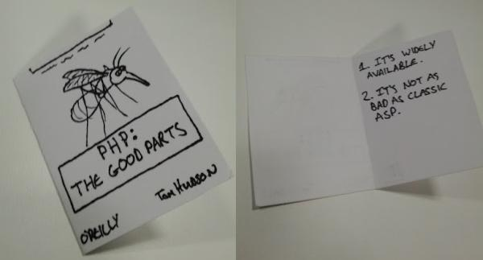
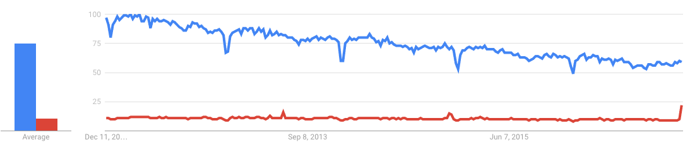
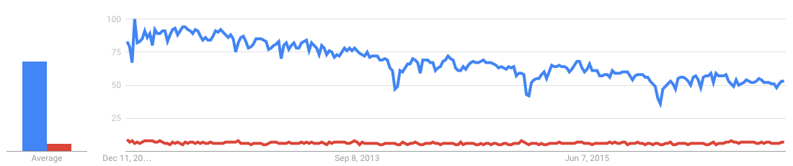
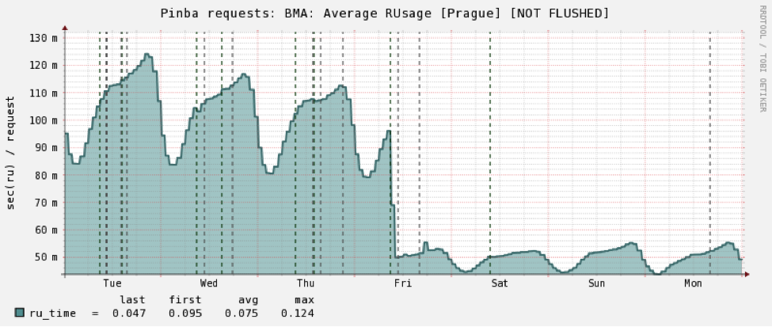
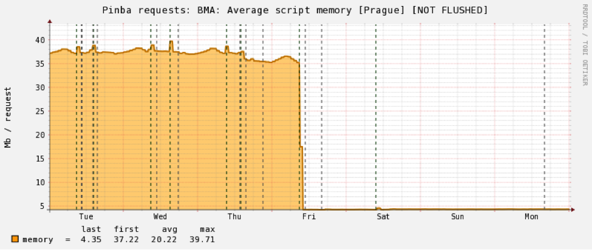
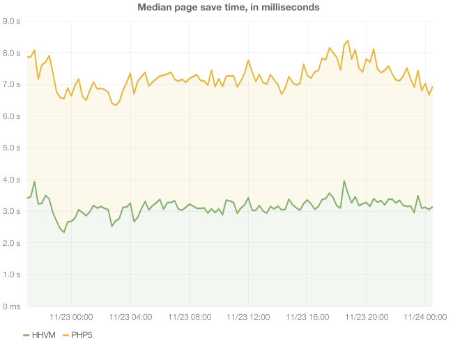
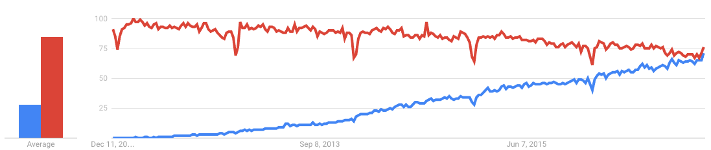
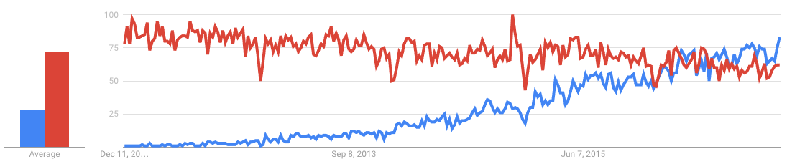

Proposta de renovação com PHP
O que defendemos?
- Integração das equipes
- Melhoria de performance
- Agilizar o desenvolvimento
- Diminuição dos custos
- Facilidade de expandir a equipe
- Se já vamos migrar, a hora é agora!
PHP
Características do PHP
PHP no Mercado
Pesquisa por skill no LinkedIn
No mundo 🌎
No Brasil 🇧🇷
Stack Overflow Developer Survey 2016

Popularidade 🌎
Popularidade 🇧🇷
Ruby vermelho / PHP azul
Profissionais
Vamos falar dos profissionais da área?
Perfil
- Maior oferta de profissionais
- Perfil condizente com o resto da equipe
- Salário médio condizente com mercado
Curva de aprendizado
- Linguagem fácil de aprender
- Sintaxe comum à outras linguagens (C-Like Syntax)
- Comunidade de desenvolvedores maior, com mais recursos
- Restante da equipe já trabalha com PHP
- Maior parte dos desenvolvedores web trabalha
ou já trabalhou com PHP - Mais desenvolvedores que já trabalharam com
tecnologias front-end
Evolução do PHP
- Grandes updates todo ano, linguagem evoluindo rápido (ref.)
- Versão 5.6, de agosto/2014, trouxe diversas melhorias de memória e performance
- Enorme avanço com a versão 7.0, de dezembro/2015
- Versão 7.1 lançada em dezembro/2016
- TDG: PHP 5.5 (2013)
Performance
Histórico de evolução
| PHP Version | Math | String | Loops | If / Else | Total |
|---|---|---|---|---|---|
| 7.0.4 | 0.389 | 0.669 | 0.178 | 0.276 | 1.513s |
| 7.0.1 | 0.430 | 0.585 | 0.160 | 0.240 | 1.416s |
| 5.6.20 | 1.262 | 1.460 | 0.459 | 0.664 | 3.847s |
| 5.5.5 | 1.415 | 1.548 | 0.455 | 0.625 | 4.045s |
Não temos ainda benchmark do PHP 7.1, mas houve melhora de performance.
Casos de sucesso
Sites mais populares (ref.)
Wikipedia
- Quinto site mais acessado do mundo
- 500 milhões de usuários ativos (dados desatualizados)
- Baseado no MediaWiki (open-source) inteiramente em PHP
- Exclusivamente escrito em PHP
- Em 2014 passou a usar o HHVM
Yahoo
- Sexto site mais acessado do mundo
- 1 bilhão de usuários ativos
- Exclusivamente escrito em PHP
- Ninguém se importa com o Yahoo
Badoo
- 60 milhões de usuários ativos
-
Atualizou suas aplicações para PHP 7
e economizaram 1 milhão de dólares (ref.)
Badoo
Uso de CPU após PHP 7.0
Badoo
Uso de memória após PHP 7.0
- Décimo quarto site mais acessado do mundo
- 317 milhões de usuários ativos
- Utiliza Ruby on Rails
¯\_(ツ)_/¯
HHVM
O que é?
Ao invés de codificar extensões de PHP em C++ para melhorar a performance, o Facebook criou o HHVM, que usa apenas um código-base em PHP e o compila para C++ aumentando bastante a performance.
O Wikipedia com HHVM reduziu muito o uso de memória e o tempo para salvar as páginas com o HHVM (ref.)
Padrões
O PHP-FIG é um grupo que convenciona padrões de desenvolvimento em PHP, padronizando o código, mantendo o mesmo manutenível e com qualidade.
http://www.php-fig.org/
Frameworks
- Laravel
- Yii
- Phalcom Framework
- Symphony
- CodeIgniter
- CakePHP
- Webedia 😡💩👎
Vamos falar de coisa boa?
Laravel
Características
- Criado em 2011, é um software novo
- Muito material didático com destaque para Laracasts
- Curva de aprendizado pequena (ref.)
- Fácil instalação/implementação em ambientes/servidores
- Documentação completa e de fácil entendimento
- Segue padrões do PHP-FIG, sugere muitas convenções e melhores práticas
- Segue as mesmas propostas que o Ruby on Rails
- Muitos packages desenvolvidos pela comunidade exclusivamente para Laravel
- Ótimo template engine sendo referência para muitos projetos
- Foco em melhorias de performance e novas features
- Possibilidade de utilizar o Lumen, que é um aplicação mais leve e rápida do Laravel
- E muitas outras features que você pode checar na documentação
Contribuições
O Laravel é um projeto open-source, com muitos colaboradores e vem ganhando muitos mais, fazendo com que evolua rapidamente.
Temos um major update a cada semestre.
É um projeto que possui 5 anos de vida e já conquistou muitos colaboradores, com uma evolução muito maior que o Rails, que existe há 11 anos.
28 mil stars no Github em 5 anos contra 34 mil do Ruby em 11 anos.
Popularidade 🌎
Popularidade 🇧🇷
Ruby on Rails vermelho / Laravel azul
Sugestões de mudanças
HAML ou HTML
- Profissionais já conhecem HTML (zero curva de aprendizado)
- Designers com poucos conhecimentos conseguem lidar com HTML e não com novas linguagens
- Processamento de cada tag de HAML, por mais que baixa
Não utilizar o Turbolinks
- Dificulta o desenvolvimento de JavaScript no front-end
- Dificulta absurdamente os testes
- Faz muitas coisas em background que você não sabe realmente o que está acontecendo e não é otimizado
- Os eventos comuns não são chamados, como ready do document, causando incompatibilidade com algumas bibliotecas e gerando mais trabalho no fluxo normal do JS
- Não apenas os recursos são salvos (CSS, JS), mas sim o escopo global inteiro
-
Existem muitos outros exemplos pelo qual não é recomendado usar o turbolinks:
Veja aqui, aqui e aqui.
Apache ou NGINX
Montar apenas uma estrutura de aplicação, não tendo que passar por Apache e PHP para entrar no NGINX e depois no Ruby. Podemos trabalhar apenas com o NGINX e o PHP.
Escalabilidade
Escalar a aplicação horizontalmente, assim como a Amazon recomenda que todas as grandes aplicações cresçam e todos os grandes serviços crescem. E o PHP é facilmente escalado horizontalmente.
Se preocupar mais com banco de dados (otimizar estrutura e queries, caching), rede (menos imagens, imagens mais comprimidas, otimizar o layout, reduzir requests, reduzir HTML enviado, compressão do HTTP, HTTP2 anti-patterns, browser caching), CPU e uso de memória (caching), pois são as grandes questões que causam problemas de instabilidade em aplicações. A diferença entre linguagens aqui não faz tanta diferença, apesar de existir um gap de performance entre linguagens.